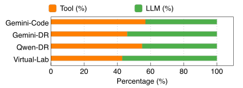
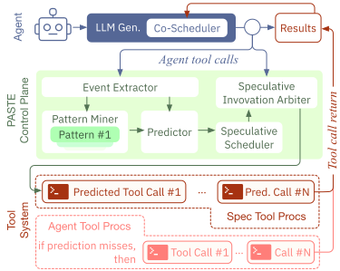
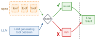
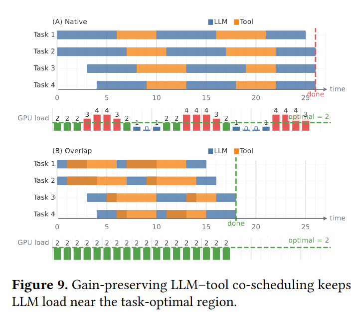
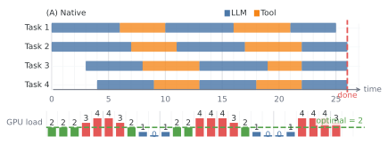
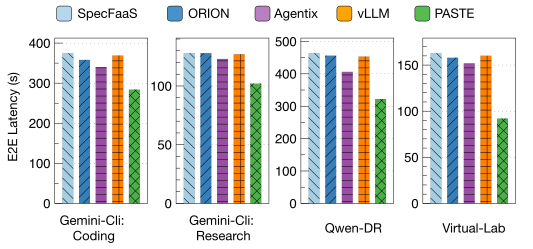
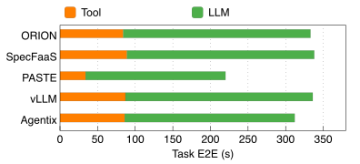
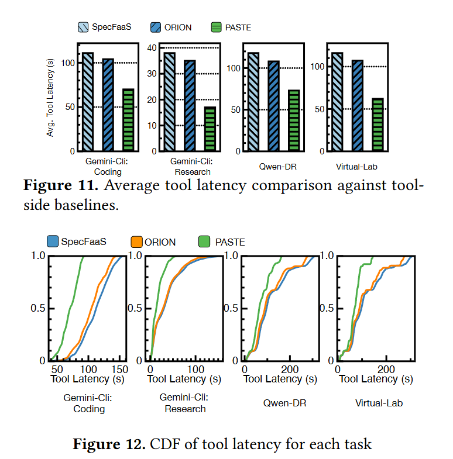
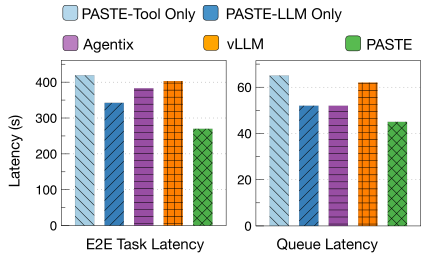
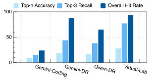

PASTE: Parallelizing Tool Execution and LLM Generation for Low-Latency Agent Serving
论文链接：arXiv
工具侧优化
Motivation
工具等待也是 Agent 的关键路径
React范式： LLM 生成 → 发起工具调用 → 等待工具结果 → 结果回到上下文 → LLM 继续生成
现有系统通常把这条链路物理串行化。
论文在没有排队竞争的单请求条件下测得，工具执行占代表性 deep research、coding 和 scientific-agent 任务端到端延迟的 45%–57%。因此只优化 LLM 的 token 生成速度，仍然无法消除 Agent 的主要等待。

Figure 3 这项实验刻意使用单请求、无排队的有利条件，排除了 GPU 拥塞造成的额外等待，工具执行仍占 45%–57%，说明工具时间是关键路径的一主要部分，而不只是高并发时才出现的调度问题。
进一步观察到，工具调用中存在可重复的局部模式，例如 search → visit、edit → run test、grep → file_editor。如果能在当前 LLM 轮次结束前猜到下一次具体工具调用，就可以提前执行工具，把一部分工具时间藏到当前 LLM 生成阶段中。
但盲目并行也有风险：工具结果集中返回时，多个 session 会同时重新进入 LLM engine，造成 GPU 排队。 论文实测并发从 1 增加到 192 时，LLM 生成时间增长超过 17 倍，而工具执行时间变化相对有限。
因此 PASTE 同时解决两个问题：提前执行正确的工具调用，以及控制工具结果返回 LLM 的节奏。
Core Design
PASTE 的整体结构
PASTE 在 Agent runtime、工具执行器和 vLLM 之间增加 session-level control plane，由三个组件组成：
- Pattern Analyzer：从历史和在线轨迹中识别重复的工具调用模式，并将模式绑定到当前任务的具体参数。
- Tool Speculation Scheduler：按照预测结果提交推测工具调用，并用预算、优先级和可抢占机制限制猜错的代价。
- LLM–Tool Co-Scheduler：联合考虑工具执行和 LLM session 返回，避免工具侧加速造成 LLM 侧拥塞。
PASTE 不改变 Agent 的语义顺序，而是提前准备可能发生的未来工具结果，只有当 LLM 后续实际生成了匹配的调用，推测结果才会被采用。

Figure 7 图中上层负责从 session 轨迹产生具体预测，中层负责推测任务的 admission、优先级和隔离，下层同时连接工具执行资源与 vLLM。
Pattern Analyzer：预测具体的下一次调用
分析器记录 LLM turn、工具名、参数、输出、时间和 session 标识，把连续工具调用压缩成模式，再将模式中的变量绑定到当前任务已有的 payload。比如历史上经常出现 search(query) → visit(url)，只有当当前任务已经产生具体 URL 时，系统才会实例化 visit(url) 并执行。参数不完整的预测只作为提示，不会真正发起调用。
论文使用历史任务挖掘模式，并在不重叠的新任务上测试预测质量。因此它仍然依赖工作流中存在可复用的局部模式。
Tool Speculation Scheduler：把推测调用和真实调用隔离
工具调用分为两类：
- Authoritative call：LLM 已经明确生成的真实调用，优先级最高。
- Speculative call：PASTE 提前发起的候选调用，不能直接修改 Agent 正式状态。
执行流程是：预测具体调用，先在受控环境中执行；等 LLM 生成权威调用后，比较工具和参数是否匹配。匹配时复用推测结果；不匹配时丢弃推测结果，并正常执行权威调用。推测任务受并发、CPU、内存和网络预算限制，并且可以被抢占，因此不会挤压真实工具调用。

LLM–Tool Co-Scheduler：防止工具加速反而拖慢 LLM
如果只加入预测工具执行，许多结果可能在短时间内同时返回，导致 LLM engine 突然接收大量 ready session。PASTE 因此把“工具结果已经准备好”与“现在立刻恢复 LLM”分成两个事件。
它先为每个候选 session 计算收益/压力优先级：
$$ priority(i)=\frac{ExposedToolGain(i)}{LLMPressure(i,load)}+Aging(i) $$
其中 ExposedToolGain 表示提前完成工具后可能隐藏的时间，LLMPressure 表示把该 session 放回 engine 对当前负载造成的压力，Aging 用来提高等待过久 session 的优先级。收益大且不会明显增加 GPU 压力的 session 先恢复，其他结果暂存在 ready queue 中。
批次级的 engine pressure 定义为：
EnginePressure(B) = DecodeLoad(B) + γ ⋅ KVLoad(B)
PASTE 只在压力处于 workload-aware 的安全区间时放行新的 session：
Plow ≤ EnginePressure(B) ≤ Phigh


Figure 9 的三层逻辑：
- Native execution：LLM 生成和工具执行严格串行，工具运行时 GPU 可能空闲，下一轮 LLM 必须等工具结束后才能开始。
- 单纯 overlap：如果所有提前完成的工具同时把结果推回 LLM，会形成 ready-session burst，工具等待减少了，但 Decode queue 和 KV 压力会突然升高。
- Gain-preserving co-scheduling（PASTE）：工具执行与 LLM 生成可以重叠，但结果按照 priority 和 EnginePressure 分批放行
Evaluation
实验设置与比较对象
实验使用 4 个节点，每节点 8 张 NVIDIA A100 80GB、96 个 vCPU 和 512GB 内存，共 32 张 GPU。LLM 后端为 vLLM，模型为 Qwen-DeepResearch-30B 和 Qwen3-30B-A3B。
评估覆盖三类 Agent：VirtualLab（科学研究）、Qwen Deep Research（多步搜索和报告生成）以及 gemini-cli （代码修改和命令行任务）。基准包括 DeepResearchBench、SWE-bench 和 ScholarQA；请求到达过程还通过生产 Azure Functions invocation trace 重放来模拟突发流量。
比较对象分成两侧：vLLM 和 Agentix 代表 LLM/Agent serving 调度，ORION 和 SpecFaaS 代表工具侧加速。
端到端延迟：两侧机制共同降低等待
Figure 10 显示，PASTE 相比 vLLM、Agentix、ORION 和 SpecFaaS 都降低了端到端延迟；论文报告平均延迟最高降低 43.5%，P99 尾延迟最高改善 55.4%。

Figure 15 的时间拆分显示，PASTE 的暴露工具时间降到约 34 秒，工具侧 baseline 约为 84–89 秒；LLM 侧时间降到约 186 秒，LLM/Agent serving baseline 约为 226–249 秒。因此它是两侧都减少了可见等待。

工具侧效果与并发扩展
Figure 11 和 Figure 12 显示，相比 ORION 和 SpecFaaS，PASTE 的平均工具延迟最高降低 55.2%，P99 工具延迟最高降低 60.6%；汇总配置下工具侧 speedup 分别为 1.71× 和 1.83×。

消融
论文比较了 PASTE-Tool-Only、PASTE-LLM-Only、vLLM 和 Agentix。前者只有推测工具执行，没有 LLM–Tool Co-Scheduler；后者没有推测执行，只通过 LLM 侧 admission/pacing 减少 GPU 排队。
Figure 17 显示，单独做工具侧或 LLM 侧都不如 Full PASTE。Full PASTE 在该消融设置中将 E2E 延迟降到约 270 秒，LLM queueing time 降到约 45 秒；不同 baseline/消融版本之间，E2E 延迟降低 21.1%–35.6%，LLM 排队时间降低 13.5%–30.8%。

预测质量、安全性与开销
Figure 18 报告最高 27.8% Top-1 accuracy、43.9% Top-3 recall 和 93.8% overall hit rate。overall hit rate 允许系统执行多个候选，编译/测试循环等结构化工作流更容易预测，开放式研究任务更难预测。

副作用审计中，论文报告没有产生可提交的外部副作用，最终任务结果与 baseline 没有差异。资源实验中，PASTE 使用约 1–3 个额外空闲 CPU core 和 250MB 内存，将工具延迟降低约 48%；归一化开销约为每节省 1 秒延迟增加 0.02 core-seconds CPU、2.6MB 内存和 0.9MB 网络带宽。